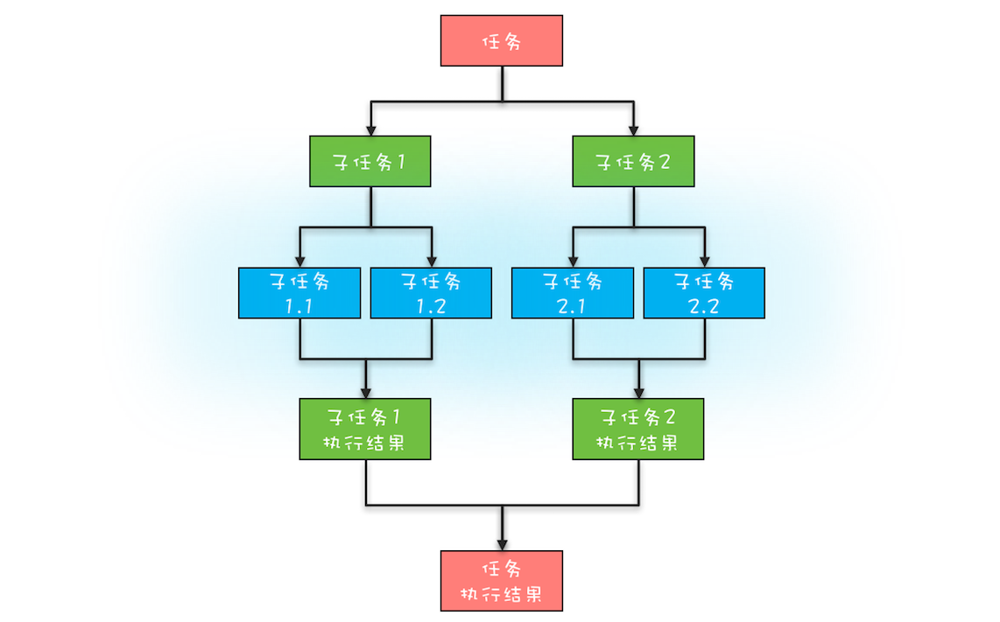

- 00 学习攻略 如何才能学好并发编程？.md.html
- 00 开篇词 你为什么需要学习并发编程？.md.html
- 01 可见性、原子性和有序性问题：并发编程Bug的源头.md.html
- 02 Java内存模型：看Java如何解决可见性和有序性问题.md.html
- 03 互斥锁（上）：解决原子性问题.md.html
- 04 互斥锁（下）：如何用一把锁保护多个资源？.md.html
- 05 一不小心就死锁了，怎么办？.md.html
- 06 用“等待-通知”机制优化循环等待.md.html
- 07 安全性、活跃性以及性能问题.md.html
- 08 管程：并发编程的万能钥匙.md.html
- 09 Java线程（上）：Java线程的生命周期.md.html
- 10 Java线程（中）：创建多少线程才是合适的？.md.html
- 11 Java线程（下）：为什么局部变量是线程安全的？.md.html
- 12 如何用面向对象思想写好并发程序？.md.html
- 13 理论基础模块热点问题答疑.md.html
- 14 Lock和Condition（上）：隐藏在并发包中的管程.md.html
- 15 Lock和Condition（下）：Dubbo如何用管程实现异步转同步？.md.html
- 16 Semaphore：如何快速实现一个限流器？.md.html
- 17 ReadWriteLock：如何快速实现一个完备的缓存？.md.html
- 18 StampedLock：有没有比读写锁更快的锁？.md.html
- 19 CountDownLatch和CyclicBarrier：如何让多线程步调一致？.md.html
- 20 并发容器：都有哪些“坑”需要我们填？.md.html
- 21 原子类：无锁工具类的典范.md.html
- 22 Executor与线程池：如何创建正确的线程池？.md.html
- 23 Future：如何用多线程实现最优的“烧水泡茶”程序？.md.html
- 24 CompletableFuture：异步编程没那么难.md.html
- 25 CompletionService：如何批量执行异步任务？.md.html
- 26 Fork_Join：单机版的MapReduce.md.html
- 27 并发工具类模块热点问题答疑.md.html
- 28 Immutability模式：如何利用不变性解决并发问题？.md.html
- 29 Copy-on-Write模式：不是延时策略的COW.md.html
- 3 个用户来信 打开一个新的并发世界.md.html
- 30 线程本地存储模式：没有共享，就没有伤害.md.html
- 31 Guarded Suspension模式：等待唤醒机制的规范实现.md.html
- 32 Balking模式：再谈线程安全的单例模式.md.html
- 33 Thread-Per-Message模式：最简单实用的分工方法.md.html
- 34 Worker Thread模式：如何避免重复创建线程？.md.html
- 35 两阶段终止模式：如何优雅地终止线程？.md.html
- 36 生产者-消费者模式：用流水线思想提高效率.md.html
- 37 设计模式模块热点问题答疑.md.html
- 38 案例分析（一）：高性能限流器Guava RateLimiter.md.html
- 39 案例分析（二）：高性能网络应用框架Netty.md.html
- 40 案例分析（三）：高性能队列Disruptor.md.html
- 41 案例分析（四）：高性能数据库连接池HiKariCP.md.html
- 42 Actor模型：面向对象原生的并发模型.md.html
- 43 软件事务内存：借鉴数据库的并发经验.md.html
- 44 协程：更轻量级的线程.md.html
- 45 CSP模型：Golang的主力队员.md.html
- 用户来信 真好，面试考到这些并发编程，我都答对了！.md.html
- 结束语 十年之后，初心依旧.md.html
- 捐赠
26 Fork_Join：单机版的MapReduce
前面几篇文章我们介绍了线程池、Future、CompletableFuture和CompletionService，仔细观察你会发现这些工具类都是在帮助我们站在任务的视角来解决并发问题，而不是让我们纠缠在线程之间如何协作的细节上（比如线程之间如何实现等待、通知等）。对于简单的并行任务，你可以通过“线程池+Future”的方案来解决；如果任务之间有聚合关系，无论是AND聚合还是OR聚合，都可以通过CompletableFuture来解决；而批量的并行任务，则可以通过CompletionService来解决。
我们一直讲，并发编程可以分为三个层面的问题，分别是分工、协作和互斥，当你关注于任务的时候，你会发现你的视角已经从并发编程的细节中跳出来了，你应用的更多的是现实世界的思维模式，类比的往往是现实世界里的分工，所以我把线程池、Future、CompletableFuture和CompletionService都列到了分工里面。
下面我用现实世界里的工作流程图描述了并发编程领域的简单并行任务、聚合任务和批量并行任务，辅以这些流程图，相信你一定能将你的思维模式转换到现实世界里来。
从上到下，依次为简单并行任务、聚合任务和批量并行任务示意图
上面提到的简单并行、聚合、批量并行这三种任务模型，基本上能够覆盖日常工作中的并发场景了，但还是不够全面，因为还有一种“分治”的任务模型没有覆盖到。分治，顾名思义，即分而治之，是一种解决复杂问题的思维方法和模式；具体来讲，指的是把一个复杂的问题分解成多个相似的子问题，然后再把子问题分解成更小的子问题，直到子问题简单到可以直接求解。理论上来讲，解决每一个问题都对应着一个任务，所以对于问题的分治，实际上就是对于任务的分治。
分治思想在很多领域都有广泛的应用，例如算法领域有分治算法（归并排序、快速排序都属于分治算法，二分法查找也是一种分治算法）；大数据领域知名的计算框架MapReduce背后的思想也是分治。既然分治这种任务模型如此普遍，那Java显然也需要支持，Java并发包里提供了一种叫做Fork/Join的并行计算框架，就是用来支持分治这种任务模型的。
分治任务模型
这里你需要先深入了解一下分治任务模型，分治任务模型可分为两个阶段：一个阶段是任务分解，也就是将任务迭代地分解为子任务，直至子任务可以直接计算出结果；另一个阶段是结果合并，即逐层合并子任务的执行结果，直至获得最终结果。下图是一个简化的分治任务模型图，你可以对照着理解。

简版分治任务模型图
在这个分治任务模型里，任务和分解后的子任务具有相似性，这种相似性往往体现在任务和子任务的算法是相同的，但是计算的数据规模是不同的。具备这种相似性的问题，我们往往都采用递归算法。
Fork/Join的使用
Fork/Join是一个并行计算的框架，主要就是用来支持分治任务模型的，这个计算框架里的Fork对应的是分治任务模型里的任务分解，Join对应的是结果合并。Fork/Join计算框架主要包含两部分，一部分是分治任务的线程池ForkJoinPool，另一部分是分治任务ForkJoinTask。这两部分的关系类似于ThreadPoolExecutor和Runnable的关系，都可以理解为提交任务到线程池，只不过分治任务有自己独特类型ForkJoinTask。
ForkJoinTask是一个抽象类，它的方法有很多，最核心的是fork()方法和join()方法，其中fork()方法会异步地执行一个子任务，而join()方法则会阻塞当前线程来等待子任务的执行结果。ForkJoinTask有两个子类——RecursiveAction和RecursiveTask，通过名字你就应该能知道，它们都是用递归的方式来处理分治任务的。这两个子类都定义了抽象方法compute()，不过区别是RecursiveAction定义的compute()没有返回值，而RecursiveTask定义的compute()方法是有返回值的。这两个子类也是抽象类，在使用的时候，需要你定义子类去扩展。
接下来我们就来实现一下，看看如何用Fork/Join这个并行计算框架计算斐波那契数列（下面的代码源自Java官方示例）。首先我们需要创建一个分治任务线程池以及计算斐波那契数列的分治任务，之后通过调用分治任务线程池的 invoke() 方法来启动分治任务。由于计算斐波那契数列需要有返回值，所以Fibonacci 继承自RecursiveTask。分治任务Fibonacci 需要实现compute()方法，这个方法里面的逻辑和普通计算斐波那契数列非常类似，区别之处在于计算 Fibonacci(n - 1) 使用了异步子任务，这是通过 f1.fork() 这条语句实现的。
static void main(String[] args){
//创建分治任务线程池
ForkJoinPool fjp =
new ForkJoinPool(4);
//创建分治任务
Fibonacci fib =
new Fibonacci(30);
//启动分治任务
Integer result =
fjp.invoke(fib);
//输出结果
System.out.println(result);
}
//递归任务
static class Fibonacci extends
RecursiveTask<Integer>{
final int n;
Fibonacci(int n){this.n = n;}
protected Integer compute(){
if (n <= 1)
return n;
Fibonacci f1 =
new Fibonacci(n - 1);
//创建子任务
f1.fork();
Fibonacci f2 =
new Fibonacci(n - 2);
//等待子任务结果，并合并结果
return f2.compute() + f1.join();
}
}
ForkJoinPool工作原理
Fork/Join并行计算的核心组件是ForkJoinPool，所以下面我们就来简单介绍一下ForkJoinPool的工作原理。
通过专栏前面文章的学习，你应该已经知道ThreadPoolExecutor本质上是一个生产者-消费者模式的实现，内部有一个任务队列，这个任务队列是生产者和消费者通信的媒介；ThreadPoolExecutor可以有多个工作线程，但是这些工作线程都共享一个任务队列。
ForkJoinPool本质上也是一个生产者-消费者的实现，但是更加智能，你可以参考下面的ForkJoinPool工作原理图来理解其原理。ThreadPoolExecutor内部只有一个任务队列，而ForkJoinPool内部有多个任务队列，当我们通过ForkJoinPool的invoke()或者submit()方法提交任务时，ForkJoinPool根据一定的路由规则把任务提交到一个任务队列中，如果任务在执行过程中会创建出子任务，那么子任务会提交到工作线程对应的任务队列中。
如果工作线程对应的任务队列空了，是不是就没活儿干了呢？不是的，ForkJoinPool支持一种叫做“任务窃取”的机制，如果工作线程空闲了，那它可以“窃取”其他工作任务队列里的任务，例如下图中，线程T2对应的任务队列已经空了，它可以“窃取”线程T1对应的任务队列的任务。如此一来，所有的工作线程都不会闲下来了。
ForkJoinPool中的任务队列采用的是双端队列，工作线程正常获取任务和“窃取任务”分别是从任务队列不同的端消费，这样能避免很多不必要的数据竞争。我们这里介绍的仅仅是简化后的原理，ForkJoinPool的实现远比我们这里介绍的复杂，如果你感兴趣，建议去看它的源码。
ForkJoinPool工作原理图
模拟MapReduce统计单词数量
学习MapReduce有一个入门程序，统计一个文件里面每个单词的数量，下面我们来看看如何用Fork/Join并行计算框架来实现。
我们可以先用二分法递归地将一个文件拆分成更小的文件，直到文件里只有一行数据，然后统计这一行数据里单词的数量，最后再逐级汇总结果，你可以对照前面的简版分治任务模型图来理解这个过程。
思路有了，我们马上来实现。下面的示例程序用一个字符串数组 String[] fc 来模拟文件内容，fc里面的元素与文件里面的行数据一一对应。关键的代码在 compute() 这个方法里面，这是一个递归方法，前半部分数据fork一个递归任务去处理（关键代码mr1.fork()），后半部分数据则在当前任务中递归处理（mr2.compute()）。
static void main(String[] args){
String[] fc = {"hello world",
"hello me",
"hello fork",
"hello join",
"fork join in world"};
//创建ForkJoin线程池
ForkJoinPool fjp =
new ForkJoinPool(3);
//创建任务
MR mr = new MR(
fc, 0, fc.length);
//启动任务
Map<String, Long> result =
fjp.invoke(mr);
//输出结果
result.forEach((k, v)->
System.out.println(k+":"+v));
}
//MR模拟类
static class MR extends
RecursiveTask<Map<String, Long>> {
private String[] fc;
private int start, end;
//构造函数
MR(String[] fc, int fr, int to){
this.fc = fc;
this.start = fr;
this.end = to;
}
@Override protected
Map<String, Long> compute(){
if (end - start == 1) {
return calc(fc[start]);
} else {
int mid = (start+end)/2;
MR mr1 = new MR(
fc, start, mid);
mr1.fork();
MR mr2 = new MR(
fc, mid, end);
//计算子任务，并返回合并的结果
return merge(mr2.compute(),
mr1.join());
}
}
//合并结果
private Map<String, Long> merge(
Map<String, Long> r1,
Map<String, Long> r2) {
Map<String, Long> result =
new HashMap<>();
result.putAll(r1);
//合并结果
r2.forEach((k, v) -> {
Long c = result.get(k);
if (c != null)
result.put(k, c+v);
else
result.put(k, v);
});
return result;
}
//统计单词数量
private Map<String, Long>
calc(String line) {
Map<String, Long> result =
new HashMap<>();
//分割单词
String [] words =
line.split("\\s+");
//统计单词数量
for (String w : words) {
Long v = result.get(w);
if (v != null)
result.put(w, v+1);
else
result.put(w, 1L);
}
return result;
}
}
总结
Fork/Join并行计算框架主要解决的是分治任务。分治的核心思想是“分而治之”：将一个大的任务拆分成小的子任务去解决，然后再把子任务的结果聚合起来从而得到最终结果。这个过程非常类似于大数据处理中的MapReduce，所以你可以把Fork/Join看作单机版的MapReduce。
Fork/Join并行计算框架的核心组件是ForkJoinPool。ForkJoinPool支持任务窃取机制，能够让所有线程的工作量基本均衡，不会出现有的线程很忙，而有的线程很闲的状况，所以性能很好。Java 1.8提供的Stream API里面并行流也是以ForkJoinPool为基础的。不过需要你注意的是，默认情况下所有的并行流计算都共享一个ForkJoinPool，这个共享的ForkJoinPool默认的线程数是CPU的核数；如果所有的并行流计算都是CPU密集型计算的话，完全没有问题，但是如果存在I/O密集型的并行流计算，那么很可能会因为一个很慢的I/O计算而拖慢整个系统的性能。所以建议用不同的ForkJoinPool执行不同类型的计算任务。
如果你对ForkJoinPool详细的实现细节感兴趣，也可以参考Doug Lea的论文。
课后思考
对于一个CPU密集型计算程序，在单核CPU上，使用Fork/Join并行计算框架是否能够提高性能呢？
欢迎在留言区与我分享你的想法，也欢迎你在留言区记录你的思考过程。感谢阅读，如果你觉得这篇文章对你有帮助的话，也欢迎把它分享给更多的朋友。
© 2019 - 2023 Liangliang Lee. Powered by gin and hexo-theme-book.